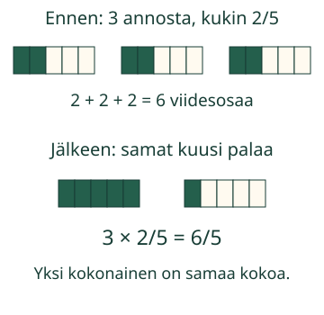

Kolme samanlaista annosta
Aava tekee kolme annosta. Jokaiseen tulee kaksi viidesosaa samankokoisesta nauhasta. Paljonko tarvitaan yhteensä?
Kokoan monta samanlaista murtomäärää yhteen.
Toista sama määrä
Ota kolme yhtä pitkää paperinauhaa. Yksi nauha on yksi kokonainen. Jaa jokainen viiteen yhtä suureen osaan. Ota jokaisesta kaksi osaa.
Osia on 2 + 2 + 2 eli 3 × 2 = 6. Jokainen on yhä viidesosa yhdestä alkuperäisestä nauhasta. Siksi 3 × 2/5 = 6/5.

Myös kokonaisia voi tulla monta
Neljä annosta, kukin 3/4: neljä kertaa kolme neljäsosapalaa on 12 neljäsosaa. Neljä palaa täyttää yhden kokonaisen. 4 × 3/4 = 12/4 = 3.
Korjattava ajatus
3 × 2/5 ei ole 6/15. Viidestoistaosa olisi pienempi pala. Tässä toistetaan samaa määrää. Yksittäisiä paloja ei leikata uudelleen eikä niiden kokoa muuteta.
Kerää annokset yhteen
Ennusta: suureneeko yksittäinen pala, kun otat saman annoksen kolme kertaa? Etene annos kerrallaan tai toista palojen liike. Malli on vapaaehtoinen apu.
Anna yhteinen määrä
Voit vastata suoraan. Mallin kaikkia paloja ei tarvitse napauttaa. Esimerkiksi luku 3 voidaan kirjoittaa 3/1.
Kokonaisluvut 0–999, nimittäjä ei nolla. Samanarvoiset murtoluvut käyvät. Merkintää ei tarvitse supistaa.
Apua
Laske annosten määrä kertaa yhdessä annoksessa olevien palojen määrä. Nimittäjä nimeää saman palan koon. Esimerkiksi kahdessa 1/4-annoksessa on kaksi neljäsosaa: 2/4. Palojen määrä ja kokonaisten määrä ovat eri asioita.
Uusi tilanne: vieraat
Kahdeksan vierasta saa kukin 3/4 yhtä suuresta annosnauhasta. Tarvitaan 8 × 3 = 24 neljäsosapalaa. Neljä palaa tekee yhden kokonaisen, joten 24/4 = 6 kokonaista. Alla oleva annosmalli alkaa valinnasta ”8 annosta, kukin 3/4”. Kuvassa näkyvät kaikki kahdeksan annosta.
Tutki kahdeksan annoksen mallia
Malli on ilman JavaScriptiä alkuperäisessä kohdassaan: avaa mallin kohta.
Lisätutkimus
Jos annoksia on yksi, määrä pysyy samana. Jos annoksia ei ole yhtään, yhteismäärä on 0. Näytä miksi 0 × 2/5 = 0/5 = 0. Voit tarkistaa kertolaskun toistuvana yhteenlaskuna.
Opettajalle: yksikkö ja rajat
Vuosiluokat 3–6. Vaaditut esitiedot M-FRAC-03 ja M-MUL-01. Kertolasku rakentuu samankokoisten yksikköosien toistamisesta. Yhden kokonaisen vertailumitta säilyy alkuperäisen yhden nauhan mittana. Se ei vaihdu kolmen nauhan yhteismääräksi.
Offline: valmiiksi leikatut samanpituiset nauhat ja saman jakomäärän palat. Sovi alkuperäinen kokonainen ennen kuin kokoat palat uudelleen. Käsin kokoamisen osaamista tai oppijan omaa perustelua ei päätellä ruudun vastauksesta.
Mallin määrä ja harjoituksen tilanne valitaan erikseen. Kaikkien palojen leveys ja korkeus pysyvät samoina ennen siirtoa, sen aikana ja jälkeen. Esitys etenee käsin tai noin 0,7 sekuntia per pala; nopeus on opetuksen valinta, ei mitattava ilmiö. Malli ei käynnisty itsestään. Yhteinen tauko pysäyttää liikkeen. Jatka-painike palauttaa käytön; liikkeen voi aloittaa uudelleen Toista-painikkeesta.
Rajaus: pienet epänegatiiviset kertojat, annetut saman yksikkökoon annokset, myös yhtä kokonaista suuremmat tulokset. Ei yleistä murtoluvulla kertomisen tai jakamisen sääntöä, sekalukualgoritmia tai negatiivista kerrointa. Harjoitus hyväksyy samanarvoiset tuetut murtoluvut. Nimittäjä on annettu muokattavaksi tueksi. Mallin tutkiminen säilyttää vastauksen palautteen; vastaus tai tehtävä muuttaa sen neutraaliksi. Ei pisteitä, henkilötallennusta, itsenäisen/viivästetyn/formaalin hallinnan tai vaikuttavuuden väitettä. Kuvat ja selitykset toimivat ilman JavaScriptiä.
Lopuksi
Miksi nimittäjää ei kerrota luvulla 3 laskussa 3 × 2/5? Näytä sama pala ennen ja jälkeen kokoamisen.